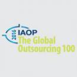

SoftServe – найбільша глобальна IT-компанія з українським корінням, яка спеціалізується на розробці програмного забезпечення та консультаційних послугах. З 1993 року SoftServe постачає нові продукти на ринок, допомагає бізнесові інноваційно розвиватися. Ми співпрацюємо і з великими світовими корпораціями, і з перспективними стартапами. Ми вміємо знайти найефективніше рішення для кожного клієнта.
Що робить SoftServe?
SoftServe має значний досвід у розробці програмного забезпечення — від Cloud, Security і UX Design до Big Analytics та Internet of Things. Головними сферами, для яких компанія розробляє програмні рішення, є охорона здоров’я, роздрібна торгівля, технології та автомобільні ринки.

Компанія-лідер за версією IAOP у списку найкращих аутсорсингових компаній 2016 Global Outsourcing 100®